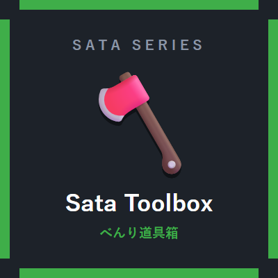

サタのべんり道具箱
Sata Toolbox — 便利系10モジュール
木こり（一括伐採）・一括採掘・一括採土の定番3機能を中心に、 畑・アイテム整理・松明まわりの「あると助かる」を10モジュールに詰めたModです。 使う機能だけONにでき、OFFのモジュールは処理が動きません。
モジュール一覧（10）
-
一括伐採（CutAll）既定ON
斧で原木を壊すと木をまるごと伐採します。葉も一緒に壊すかは設定で選べます。
-
一括採掘（MineAll）既定ON
ツルハシで鉱石を壊すと、つながっている鉱脈をまとめて採掘します。「同じ鉱石のみ連鎖」の切替あり。
-
一括採土（DigAll）既定ON
シャベルで砂・土・砂利などを壊すと、同じ種類のブロックを連鎖破壊します。対象ブロックは設定ファイルで変更できます。
-
葉の高速消滅（LeafDecay）既定ON
伐採後に残った葉が、数秒で段階的に朽ちて消えます（ドロップあり）。
-
自動植え直し（Replant）既定OFF
成熟した作物を壊すと、収穫物から種を1つ使って自動で植え直します。スニーク中は普通に壊せます。
-
右クリック収穫（Harvest）既定OFF
成熟した作物を右クリックすると、収穫して自動で植え直します。
-
アイテム吸引（Magnet）既定OFFMで切替
半径内のアイテムと経験値オーブを引き寄せます。ゲーム中にMキーでON/OFFできます（半径は設定可）。
-
インベントリ整理（Sorter）既定OFFGで実行
Gキーで、メインインベントリ（ホットバー以外）をスタック統合して整列します。
-
自動松明（TorchHelper）既定OFF
暗い場所を歩くと、手持ちの松明を1本消費して自動で設置します。光量しきい値は設定可。
-
経験値オーブ統合（XpMerge）既定ON
近くに出た経験値オーブを1つにまとめて軽量化します。経験値は失われません。
一括破壊の共通設定
一括伐採・一括採掘・一括採土の3つには共通の安全設定があります。 既定では「サバイバルのバランスを崩しにくい」側に倒してあります。
| スニーク中のみ発動 | 既定ON。しゃがんで壊したときだけ一括破壊になります。誤爆防止。 |
|---|---|
| 一度に壊せる最大ブロック数 | 上限を設定できます。大きくしすぎると重くなるので注意。 |
| ツール耐久を消費する | 既定ON。壊したブロック数ぶん耐久が減ります。 |
| ツール保護 | 既定ON。残り耐久1で一括破壊を打ち切り、ツールが壊れるのを防ぎます（耐久1のまま使い続けると壊れるので早めに修繕を）。 |
| 満腹度を消費する | 既定ON。破壊量に応じて満腹度が減ります。 |
| ドロップを足元にまとめる | 既定ON。ドロップ品が自分の足元に集まります。 |
キー操作まとめ
| B | サタシリーズ統一設定画面を開く（Sata Coreの機能） |
|---|---|
| M | アイテム吸引のON/OFF切替 |
| G | インベントリ整理を実行 |
キー割り当てはMinecraftの設定画面から変更できます。
既知の制限
- 自動植え直し・右クリック収穫は、バニラの作物ブロック系のみ対応です（ネザーウォート・カボチャの茎は対象外）。
- インベントリ整理は、GUIを閉じた状態でメインインベントリのみが対象です。
- 一括採土の対象ブロックリストの編集は設定ファイルで行います（GUIは未対応）。
ほかのSata Mod
Sata Core（前提Mod） ／ バトルサポート ／ けんちくヘルパー ／ 配信サポート ／ まきもどし